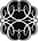

10
“Gazi, Dikmen sırtlarında dinleniyor. 12 şubat 1921.”
Gözlerimin hizasına asılmış fotoğrafın altında böyle yazıyordu: Gazi dinleniyor... Ama dinlenmiyordu. Atatürk’ün yüzlerce fotoğrafını görmüştüm. Bu fotoğrafta, dinlenen bir adam yoktu. Böyle bir adam görmüyordum. Ben bu fotoğrafta, bizden bıktığı için gözlerini kapatan birini görüyordum. Hepimizden, her şeyden bıktığı için bize bakmaktan vazgeçmiş birini görüyordum. Kurtarmak istediği insanların gerçekte bir sahtekârlar sürüsü olduğunu, onca çabasının hiçbir şeye değmeyeceğini düşünen bir adam görüyordum. Her şeyi bırakmak, her şeyden vazgeçmek, her şeyi siktir etmek isteyen bir adam. Hatta belki de hayatında ilk kez ölmeyi düşünen bir adam. Ölüp yok olmayı, kara karışmayı. Ölerek donmayı ya da donarak ölmeyi bekleyen bir adam görüyordum. Fark etmez, diye düşünen bir adam. Hiç fark etmez. Tek bir insan sesi daha duymak istemeyen, tek bir insan yüzüne daha katlanacak gücü olmayan bir adam. Bu yüzden kapalıydı gözleri. Üşüdüğünden değil, duymamak için örtmüştü kulaklarını. Evet, kesinlikle böyle olmalıydı. Gözlerimi ve kulaklarımı kapadım, diyordu. Artık istediğiniz kadar ihanet edebilirsiniz. Sizi görmüyor ve duymuyorum. Umurumda değilsiniz!
Ama ben duyabiliyordum. Fotoğraftan çıkan sesi duyuyordum. Ancak belki de duyduğum, gözlerimden çıkıp fotoğrafa çarpan ve bana dönen bir sesti. Kendi sesimdi. Ben... Protagoras’a göre her şeyin ölçüsü insandı. Ama bu herhangi bir insan değildi. Her şeyin ölçüsü, onu ölçen insandı. Ben de, Gazi’nin yüzüne ve yatış biçimine baktıkça, kendimi görüyordum. Çünkü dar ranzamın üzerine uzanabildiğim nadir anlarda, sert battaniyemin altında kayboluyor, yok olmak istiyordum. Tek bir insan daha görmemek ve duymamak için. Oysa buna olanak yoktu. Çünkü zorunlu askerlik hizmeti, tek kişilik bir oyun değil, binlerce insanın bir araya gelip sahnelediği bir gösteriydi. Oyuncuların da, izleyicilerin de asker olduğu bir gösteri. Yanaşık düzen eğitimi, bir koreografiydi. Marşlar, bir müzikalin parçasıydı. Kamuflaj, milimetrik bir kostümdü. Emirler, sorular ve yanıtları, ezberlenmesi gereken repliklerdi. Asla sadık kalınmayan senaryo, yönergelerde yazıyordu. Yönetmene “Komutanım” deniyordu. Her şey vardı. Her şey hazırdı. Ancak bütün bunlar çok fazla gürültü çıkarıyordu. Dayanılmayacak kadar çok. Yatağı yarıp içine girmek isteyecek kadar çok. Başımı koyduğum yastığı başımla doldurmak isteyecek kadar çok. Gazi’ye bakıp kendimi görecek kadar çok!
“Nöbetin var.”
Kulağıma saplanan cümleyle gözlerimi hayata açtım. Gece çavuşunun yanından geçip yemekhaneden çıktım. İlk adımımda burnum ıslandı. Kar. Yüzüme çarpıp eridikçe yüzümü donduran kar. Aylardır yağıyordu. Gece, gündüz, sabah, öğlen, önce, sonra. Gömmek için yağıyordu. Herkesi ve her şeyi. Arabaları, çocukları, evleri ve öküzleri. Kayak için gerekli kar seviyesinden söz ediyorlardı, televizyondaki haberlerde. Orospu televizyonun çocuğu haberler! Kar seviyesi mi? Kayak için uygun! Peki, yolları kara batmış köylerin, bir yaşındaki çocukları böcek gibi ölürken dili kıpırdamayan leşlerinin, yüz bir yaşındaki dedelerini yaşatmak için Fatiha Dağını kızakla aşıp Van yoluna çıkmaları için de uygun mu? Kar seviyesi! Önce ayaklar gömülür, sonra bilekler görünmez olur. Dizler, bacaklar, ahırlar. Kar, diri diri gömer. Önce yumruğunla savaşırsın. Karı geldiği yere göndermek için yumruğuna doldurur, havaya fırlatırsın. Sonra kürek. Yirmi askere bir kürek. Kırk kola bir adet! Belki bir de çekiçten bozma bir kazma. Küreklersin! Kazmalarsın! Kar yağar. Gömene kadar. Yağmur yağar, boğana kadar. Rüzgâr eser, ayaklarını yerden kesip savurana kadar. Dinlesen dünyayı, duyacaksın: İnsanoğlu insan, siktir git buradan! Ama inat edersin. Yaşayacaksın. Yer çekimi var. Gidecek bir yer yok. Sürekli olarak kovulduğun, seni yutmak için sarsılıp yarılan bu dünyada yaşamaktan başka çaren yok. Mars çok uzak! İnsanın dünya üzerindeki yaşamı bir rodeo. Hortumlar, çığlar, seller, depremler. Elinde kürek, savaşırsın. Burası benim evim, diye bağırırsın. Siktir! Burası bir ev değil! Burası hiçbir şey değil! Dünya, insanın kabuğu değil. Burası bizim yuvamız değil. Biz, yer çekimiyle dünyaya zincirlenmişiz. Kim bilir nereden kovulduk? Cennet mi? Hiç sanmıyorum! Hem de hiç!
Konuşuyordum. Dudaklarıma bastırdığım eldivenlerime anlatıyordum bütün bunları. Delik ve yeşil eldivenlerime. Bir lira. Çift kat. Ucuz olan nadir mallardan biri: Eldivenler. Elektrik sobasıyla ısınmaya çalışırken yanıp sararan eldivenler. Donmuş tüfeğin namlusuna yapıştığı için kurtarmak isterken yırtılan eldivenler. Onlara anlatıyordum aklımı ezip geçenleri. Söylediklerim, ellerime kadar geliyordu. Çünkü soğukla beraber, eldivenlerim ses de geçiriyordu.
İçleri buzlanmış suyla dolu, sahibini bilmediğim ayak izlerine basarak yürüyordum. Beyaz çamurun içinde ilerlemeye çalışıyordum. Beyaz bataklığa saplana saplana. Silahlığa vardığımda, ayak parmaklarımın sayısı çoktan bire düşmüştü. Her birini ayrı ayrı hissedemeyeceğim kadar soğuktu, postallarımın içi. Bot, deniyordu burada. Postala bot, bir zamanlar yaşadığım hayata sivil deniyordu. Daha bir sürü şeye, başka bir şey deniyordu. Askerlere ait bir dil vardı. Orduca. Konuşmaya gerek yoktu, anlamak yeterliydi. Hatta hiçbir dilde konuşmaya gerek yoktu. Çünkü biz konuşmayan bir rütbedeydik. Rütbesizlik rütbesi. Teoriye göre askerliğin temeli disiplindir. Teoriyi sırtından bıçaklayan pratiğe göreyse askerliğin temeli erlerdir. Temel, zemin, ne denirse densin, ordu üzerimizde duruyordu. Her şey ve herkes üstümüzdeydi. Karın bile altındaydık. Biz, dev bir tankın paletleriydik. On beş yıllık başçavuşların inatla parke dediği parkalarımızın sol üst cebinde taşımak zorunda olduğumuz “Erbaş ve Erin El Kitabı” adındaki, karmaşık bir makinenin karmaşık prospektüsüne benzeyen kitapçıkta yazdığı gibi, ihtiyaçları devlet tarafından karşılanan rütbesiz askerlerdik. Muhteşem erler! Eğitimde fırsat eşitliğinin en üst düzeyde yaşandığı ülkede, er olmak için elimizden gelen çabayı gösterip herhangi bir üniversiteden mezun olmamış, herhangi bir meslekte uzmanlaştığımızı kanıtlayan bir diploma almamıştık. Bu fedakârlığımızla gurur duyuyorduk. Çünkü biliyorduk. Zorunlu askerlik hizmetine ilişkin kanun ve yönetmeliklerde bir yanlışlık yapıldığını biliyorduk. Er olmak için en fazla lise ya da yüksekokul mezunu olmak gerekiyordu. Her erkeğin üniversite mezunu olduğu bir ülkede erlik yapacak kimse kalmayacaktı. Ordunun kaidesi ayaklarının altından kayıp gidecekti. Buna göz yumamazdık. Kanun koyucunun gözünden kaçan, bizden kurtulamamış ve herhangi bir üniversiteden diploma almamaya yemin etmiştik. Bazılarımız, orduyu ersiz bırakma korkusundan okumayı bile öğrenmemişti. Ne cesaret! Ne büyük fedakârlık! Şehit ya da gazi olmamıza gerek yoktu. Biz zaten kahramandık. Vatanseverliğinin bedelini hayat boyu cehaletle ödeyen kahramanlar! Ayrıca cahil kalmamızda da bir sorun yoktu. Ceza kanunlarının ruhunu herkesten daha iyi kavramıştık. Çocuğunu okula göndermemenin cezası sadece para ödemekken, askerlik hizmetini yerine getirmemenin karşılığı hapisti. Ne demek istendiğini anlayabiliyorduk. Kulaklarımız duyuyordu. Kanun satırlarına gizlenmiş o muhteşem mesajı almıştık. Buna, kanun yoluyla teşvik deniyordu. Eğitimini tamamlamamak büyütülecek bir şey değildi. Ama askere gelmemek korkunçtu! Cehalet öldürmezdi ama asker kaçaklığı süründürürdü. Bunu kanunlar söylüyordu. Okulu siktir et ama askerliğini mutlaka yap, diyorlardı. Benim açımdan cahil kalmanda sorun yok, yeter ki asker ol. Çünkü kusura bakma ama, cehaletin umurumda bile değil! Peki, demiştik biz de. Sen nasıl istersen!... Devletin gösterdiği yoldan gitmek büyük keyifti! Belki dışımız değil, ama içimiz çok rahattı.
Hücum yeleğimi sırtıma geçirdiğimde bir hafiflik hissettim. Ceplerinde dört dolu, bir boş şarjör olması gerekiyordu. Altını karakol komutanının ve benim imzaladığımız teslim tesellüm belgesinde böyle yazıyordu. Bir zamanlar adıma zimmetlenmiş olan şarjör adedi beşti. Dolayısıyla gerektiğinde ordu bunu kanıtlayabilir ancak sağ böbreğime denk düşen cebin neden boş olduğunu açıklayamazdı. 7,62 mm çapında yirmi adet mermi taşıyan bir şarjörüm yok olmuştu. Benzer durumlar üst rütbelere iletildiğinde alınan yanıtın ne olduğunu hatırlıyordum:
“Malına sahip çıksaydın. Nereden bulursan bul! Yersin tutanağı, çıkarsın mahkemeye!”
Eksik olan şarjörümü çok uzaklarda aramam gerekmiyordu. Silahlıktaydım. Silahların ve şarjör dolu hücum yeleklerinin yuvasında. Mühimmatı eksildiği için askeri mahkemeye çıkacak kişi ben olmayacaktım. Sahibini çok iyi tanıdığım bir hücum yeleğinden çektiğim şarjörü cebime koyup silahımı omzuma astım. Pişmanlık mı? Kesinlikle umurumda değildi! Evet, belki hepimiz aynı ordudaydık ama aynı askerliği yapmıyorduk. Herkesin askerliği farklıydı. Her metrekarede farklı bir askerlik vardı. Sadece ambalajlarımız benziyordu. Ambalajlarımız ve aksesuvarlarımız.
Biraz önce çıktığım yemekhanenin arkasındaki depoda, kendisine yatak yaptığı boş kolilerin üzerinde uyuyan Nahif’le, doldur-boşalt istasyonuna giderken, karın üzerinde süründükleri için üstlerinden atlayıp geçmem gereken Fethi ve Nuh’un askerliği arasında çok fark vardı. Sürünüyorlardı, çünkü sabah içtimasında yanıtını bilmedikleri bir soruyla karşılaşmışlardı. Sürünüyorlardı, çünkü annelerinin doğum gününü bile bilmemelerine rağmen, pusu çeşitlerini ezberleyip saymaları gerekiyordu. Haftalardır sürünüyorlardı. Her sabah. Yaptıkları tanımlarda herhangi bir ilerleme yoktu. Yanıtları iki kelimeyi geçmiyordu. Öğrenmeyi bilmeyen erler ve öğretmeyi bilmeyen komutanlar için ortak zemin kardı. Konu sürünerek kapanıyor ve herkes işine devam ediyordu.
Nahif ise RDM’ydi. Rehberlik ve Danışma Merkezi. Çok uzaklarda kalan bir eğitim birliğinde, kollarını ve bacaklarını jiletle kesenlerin, derisinde dövme taşıyanların ve sosyal hayatın hiçbir gereğini yerine getirmeyeceğine inanılanların erbaş ve er cüzdanının –ki bu, sivildeki nüfus cüzdanına denk düşüyordu– otuz ikinci sayfasına RDM damgasının basılmasıyla başlayan bir maceraydı. Teoride, söz konusu kişilerin, askerlik hizmetleri süresince Rehberlik ve Danışma Merkezine devam etmeleri, gerektiğinde psikiyatrik yardım almalarını gerektiren bir damgaydı. Ancak teorinin anasını siken pratikte, erbaş ve er cüzdanında RDM damgası bulunanların askerlik hayatları kişiye özel biçimde gelişiyordu.
Benim de bir damgam vardı. Ben de bir RDM’ydim. Çünkü dövmem vardı. Sırtımda, parmak uzunluğunda dört çizgi ve üzerlerine çapraz atılmış başka bir çizgi vardı. Hayatta kalacağım günlere ilişkin düşüncelerimi cezaevi diliyle ifade ediyordu. Ben de bir RDM’ydim. Çünkü önce tarafımdan kesilmiş sonra adını hiç öğrenemediğim doktorlar tarafından dikilmiş bir alnım ve bir bileğim vardı. Eğitim birliğine adım attığım birinci ayın sonunda yapılan meslek seçimlerinde turizm jandarması olmamı engelleyen bir damgam vardı. “T+S” yazıyordu yanında. Tattoo ve self mutilation kelimelerinin baş harfleri. Neden İngilizce? I don’t have any fuckin’ idea!
O garip günü hatırlıyorum. Stadyuma benzeyen bir alanda hoparlörlerden çıkıp askerlik hayatımızı kurtaracak olan anonsları bekliyorduk. Onlarca masa. Her birinin başında bir subay.
“Demir doğramacılar iki numaralı masaya! Döşemeciler altı numaralı masaya! Garsonlar dokuz numaralı masaya!”
Bekliyordum. Tabii ki herhangi bir mesleğim yoktu. Ama yine de bekliyordum. Çünkü o devrede askere alınanların arasında Fransızcayı en iyi konuşan kişi olduğumu biliyordum. Fransızca konuşmayı bilen bir jandarmanın işe yarayacağından emindim. Kapadokya’da eşekten düştüğü için oryantalist bütün ressamlara küfür eden bir Belçikalıyı, bir sonraki yıl komşusuyla birlikte Nemrut dağına çıkmaya ikna edecek kadar iyi konuşuyordum Fransızcayı. Turizm jandarması! Olmam gereken buydu.
“Fransızca bilenler yedi numaralı masaya!”
Koştum. Sıraya girdim. Bekledim. Adım adım ilerledim. Sıra bana geldi. Karşımdaki subay, elindeki kâğıda bakarak konuştu:
“Baykuş?”
Ne demek istediğini derhal anladım. Kimsenin kaybedecek zamanı yoktu. Fransızcasını söyledim. Devam etti.
“Kemer?”
Mükemmel! Tereddütsüz yanıtladım sorularını. Elini uzattı.
“Erbaşını ver.”
Verdim. Sayfaları karıştırdı. Uzatmadı.
“Sıradaki!”
O gün, RDM damgasını gören subay benden turizm jandarması olamayacağını anlamıştı. Haklıydı. Çünkü her ne kadar sırtımda da olsa, turistler dövmemin varlığını hissedebilir ve barbarlığımıza ilişkin düşünceleri sonsuza dek betonlaşmış olurdu. Çünkü Fransızca konuşarak verebileceğim zararın, yaratacağım kargaşanın sınırı yoktu. Ordu, her zamanki gibi doğru olan kararı vermiş ve Fransızca konuşarak gebertebileceğim bütün insanları kurtarmıştı. Zorunlu askerlik hizmetimi kimseye zarar vermeden yerine getirebilmem için beni on yedi kişilik bir jandarma iç güvenlik timine yerleştirip, elime G-3 adındaki ölüm makinesini tutuşturmuştu. Üstelik bir bomba atar taşımaya bile hakkım vardı. O subay sayesinde, bugün seksen mermi, tam otomatik bir muharebe silahı ve bir bomba atarla nöbet tutmaya gidiyordum. Turistler kurtulmuştu. Endişelenmesi gerekenler başkalarıydı. “Hayırlı nöbetler asker ağa!” diyen ve önümden geçip giderken, sadece kar maskemden arta kalan gözlerimi görebilen Kürtlerdi. Yanlış anlaşılmasın, onlara ateş etmek gibi bir niyetim yoktu. Nefretimi ve RDM damgalı akli dengesizliğimi Fransızca konuşarak kusuyordum. Ne de olsa omzumdaki tüfekten daha etkiliydi:
“Va te faire enculer, fils de pute!”
Ya da kışlanın doğu yakasına düşen tel örgüdeki delikten alışveriş yaptığımız bakkalın çırağının dediği gibi:
“Siktir, otostop çocuğu!”
Her nasılsa, orospuluk ile otostop arasındaki ilişkiyi kurabilmişti.
“Namlu bidona!”
Bel hizasında, betona gömülmüş, içi kum dolu, ağzı delik, on altı kırmızı bidon. Yan yana. Her birinin önünde, elindeki tüfeğin namlusunu ona saplayan bir asker.
“Kurma kolunu çek!... Bırak!”
Emirleri veren, yemekhaneye gelip nöbetim olduğunu haber veren çavuştu. İşini yapmaya çalışıyordu. Rütbelilerle aramızdaki iki köprüden biriydi. Diğeri, gündüz çavuşuydu. Şimdilik gece vardiyasındaydık. Doldur-boşalt istasyonunda. Nöbete giderken, şarjörümüzü takmadan önce tüfeğimizin atış yatağında bir mermi bulunmadığından emin oluyorduk.
“Emniyet aç!.. Tetik düşür!.. Emniyete al!.. Şarjör tak! Esas duruş!”
Nöbet dönüşünde de tersini yapacaktık. Önce şarjörü çıkaracak, sonra namlusunu bidona soktuğumuz tüfeğin kurma kolunu çekip bırakacak, emniyeti açıp tetik düşürecektik. Böylece kimse kimseyi vurmayacaktı. En azından yönergede böyle yazıyordu. Ancak yönergeler çok uzakta yazılıyordu. Başkentte bir binada. Askeri yönerge yazarlığı yapan subayların ellerinden çıkmış metinler romantik eserlerdi. Yalnız bir romantik, gerçek konusunda kendini bu denli kandırabilirdi. Oysa bir ayağı yönergeler, diğer ayağı uygulamalar olan ordunun bacakları kopacak kadar ayrılmıştı. Çünkü yönergeler bu dünyanın fizik kurallarıysa, bizler birer hayalettik. Başkentte tasarlanan ideal ordu standardının da bir hayal olduğu gibi. Yeterince uzaktaydık. Kendi hayallerimizi kurup kendi standartlarımızı belirleyecek kadar. Yeterince soğuktu. Sayfalarını standartların kapladığı el kitaplarımızı yakıp nöbette ellerimizi ısıtacak kadar.
On bir gündür aynı nöbetleri tutuyordum. Aynı nöbet kuleleri ve aynı saatler. Bu da aykırıydı yönergelere. Güvenlik gerekçesiyle. Günde sekiz saat. Dört saat arayla iki saatlik nöbetler. Cezalı olduğum ya da olağanüstü bir durum söz konusu olduğundan değil. Herkesin askerliği farklı olduğundan. Yetmiş dört kişilik bölükte sadece yirmi sekiz kişi nöbet tutuyordu. Farklı hizmetler veren diğerlerinin nöbetle ilgileri yoktu. Aşçı, koğuşçu, posta, şoför, barmen,... Geriye kalan otuz beş kişi de yıllar önce inşa edilmiş nöbet kulelerini yirmi dört saat boyunca, aralıksız işgal edebilmek için her dört saatte bir doldur-boşalt istasyonuna geliyor ve sürekli uykusuzluk çekiyordu. Yeterli sayıda değildik. Ne sayımız yeterliydi ne de özelliklerimiz. Bizler, kavgaya giderken kahveden toplanmış adamlardık. Ve hiçbir kavga, kahveden toplanan adamlarla kazanılmazdı. Bizler, uykusuzluktan delirmenin eşiğindeki amatörlerdik. Uykusuzluk ve soğuktan delirmemizi engelleyen tek şeyse korkuydu. O kadar korkuyorduk ki deliremiyorduk. Her şeyden korkuyorduk. Komutanlardan, askeri mahkemelerden, elimizdeki silahlardan ve bize yaklaşan bütün sivillerden.
Askeri uykusuzluk, uyumamak değildir. Derin uykuya hiçbir zaman geçemeden uyandırılmaktır. Yüzlerce kez, aralıksız tekrarlandığında insanın beyni yırtılır ve gözleri yuvalarından düşer. Belleği sarsan ilk depremdir. İkincisi, kişinin, emirle çalışan bir makineye dönüşmesi sonucu karar verme düzeneğinin devre dışı kalmasıdır. Uyuduğunu sanan beyin rüya görmeye devam eder ve on dokuz saat uyanık geçen askeri bir gün içinde onlarca kez ani hatırlama krizleri geçirilir. Ani hatırlama krizleri, üç yüz dördüncü kez yıkadığınız bir lavabonun üzerindeki aynaya baktığınız anda altı yaşında yediğiniz bir tokadın acısını hissetmenizdir. Hiçbir zaman düşünmediğiniz, hiçbir zaman hatırlamadığınız her şeyi, o an ve yerdeymiş gibi, bir rüyadaymış gibi yeniden yaşamanızdır. Bu krizler sırasında, sabahında eve nasıl döndüklerini bilmeyenlerin arasında sarhoş gecelerinde ne yaptıklarını hatırlayanlar bile vardır. Askerliğin hafıza açıcı tarafı, sağlıklı bir etki değildir. Kriz bittiğinde gerçeğe dönmek insanı mahveder.
Ani hatırlama krizinin kendisi gibi katil olan ikizi ani unutma krizidir. Dakikalar, saatler boyunca, unutmanızın mümkün olmadığı bilgileri hatırlayamaz ve kendi geçmişinizden şüphelenirsiniz. Bütün bunlar bir G-3’le yan yana gelince pek de şirin durmaz. Çok uzaklardaki aileler, biz nöbet tuttuğumuz için huzur içinde uyuyabilir, ancak buradaki ailelerin uykuları pek de ağır değildir. Çünkü gözlerimizin namlulara benzediğini en iyi onlar bilir.
Nöbet kulesine geldiğimde, yerini alacağım asker, camsız kulübenin içinde arka ayaklarının üzerine kalkmış bir hayvan gibi duruyordu. Hızla nefes alıp vermekten soluksuz kalmıştı. Çevresini saran donmuş nefes bulutundan anlayabiliyordum bunu. Kulübenin kırık kapısını araladığımda bile beni fark etmedi. Asansör genişliğindeki kulübede hareketsiz durduğunu sanıyor ancak ayak parmaklarının üzerinde yükselip alçalıyor, başını sürekli “Hayır!” diyormuş gibi sallıyor ve üzerindeki yedi kat kumaşa rağmen titrediği anlaşılıyordu. Gözleri, karşısındaki kare delikteydi. Otuz yedi ekran televizyon genişliğindeki delikten kışlanın önünden geçen yola bakıyordu. Gördüğünü sanmıyorum, sadece bakıyordu. Gecenin dördünden beri oradaydı ve canı yanıyordu. Elleri, ayakları, dirsekleri, karnı değil, canı yanıyordu. Bütün canı. Hayatta olduğunu kanıtlayan her şeyi acıyordu. Omzuna dokunduğumda, hissetmediğini anladım. Ancak sarsınca, hemen yanında durduğumu fark edebildi. İkimiz de çift kar maskesi takıyorduk. Bu yüzden bir deniz gözlüğüyle bakıyorduk dünyaya. Sağımız ve solumuzda olup biteni önemsemiyorduk. Sessizce yaklaşıp boğazımızı kesecek orospu çocuklarını da önemsemiyorduk. Bütün kör noktalardan yaklaşıp başımızı bedenimizden ayırabilirlerdi. Yeter ki karşımıza çıkmasınlar! O zaman savaşmak zorunda kalırdık, ancak üst üste üç eldiven taktığımız için tetiği kavramamız mümkün olmazdı. Bizim tercihimiz, donmamaktı, öldürülmemek değil. Pek zeki değildik. Zekâmız da donmuştu.
Onlarca devrenin sırtına binmiş ve sırtından inmiş paçavra kabanı çıkartmasına yardım ettim. Her ne kadar çelik yeleği takmamanın cezası, bunu fark edecek komutanın hayal gücünün genişliğini kanıtlaması için bir fırsat olsa da, umursamamış ve takmamıştı. Çelik yelek on bir kiloydu. Kokuyordu, nefes alıp veriyordu, yaşıyordu ve en önemlisi de er yapımıydı. Demir plakalar ve yırtıklar taşıyan eski bir hücum yeleğiydi. Kalbi açıkta bırakan ancak mideyi, karnı, sırtı, böbrekleri koruyan, giyenin nefesini kesmek için tasarlanmış bir çelik yelek maketi. Şimdilik yerde yatıyordu. Midem bulanarak baktım. Ben de takmayacaktım. Sadece kask. Onu takabilirdim. Garip bir deri hastalığına sahip olan ve saçları yolunmuş gibi yer yer dökülmüş köpekçi Cuma’yı kesinlikle takmaması için defalarca uyardığımız kaskı başıma geçirebilirdim. Köpekleri aç bırakmamaktan ve pisliklerini temizlemekten sorumlu olan zorunlu hayvansever Cuma takmışsa bile, boktan mikropları çift kar maskemi delip kafa derime ulaşamazdı. Ya da ben öyle sanıyordum. Aslında bunun da bir önemi yoktu. Çünkü son kez nöbet tutuyordum. Son kez. Zorunlu askerlik hizmetimin sona ermesine yarım yıldan fazla vardı ama ben son kez nöbet tutacaktım.
Hayır, askerlik kısalmamıştı. Öyle bir ihtimal yoktu. Haftada üç gün, Komutanlık Saati adındaki tatil köyü faaliyetinde izlettirilen “Neden Hedef Türkiye?” adındaki belgeselde de açıklandığı gibi ülkenin bütün komşuları düşmanımızdı ve hepimizi katledip topraklarımıza yerleşmekten başka bir şey istemiyorlardı. Dolayısıyla tehdit sürüyordu. Herkes bizden, biz de herkesten nefret ediyorduk. O konuda bir sorun yoktu. “Zorunlu askerlik hizmeti bir görev değil, kutsal bir haktır. Türkiye, genç evlatlarına ülkelerini koruma hakkını vermektedir” diye biten o muhteşem belgeselde her şey açıkça anlatılıyordu. Hatta o kadar iyi anlatılıyordu ki Antakyalı bir Ermeni olan kazancı Fuat’ı bile, sahip olduğu atalarına rağmen affedebiliyorduk. Ermeni olmak onun suçu değildi. Bir şanssızlıktı, o kadar.
“Önemli değil” diyorduk Fuat’a. “Dedenin, hain bir ibne olması senin suçun değil.” Sonra da, Fuat’ın haftalık beş kilo yoğurt hakkına ortak oluyorduk. Kazancı zehirlenmesin diye verilen yoğurt son derece bilimsel bir önlemdi ve kaymağını mutlaka biz yiyorduk.
Devraldığım nöbetin sonuncu olmasının nedeni başkaydı. Kendimi öldürecektim. Hayatım boyunca bir daha kimse bana bu kadar cephaneyi ve böylesine güçlü bir silahı bedava vermezdi. Ayağıma gelen fırsatı tepmeye niyetim yoktu. Namlusunda dört yiv ve dört set bulunan G-3’ten çıkan mermi, kendi etrafında dönerek ilerliyor ve kuş gözü kadar bir delik açıp girdiği etten kül tablası büyüklüğünde bir yarayla çıkıyordu. Hayatta kalma tehlikesi kesinlikle yoktu. Çünkü kendini öldürmeyi düşünen erlerin en büyük korkusu hayatta kalmaktı. Kendini askerliğe elverişsiz hale getirmek, büyük bir suçtu. Cezası yıllarca hapis, savaş sırasındaysa ölümdü. El kitabımızda yazıyor ve bize her fırsatta hatırlatılıyordu. İntihar etmek serbest ama hayatta kalmak, korkunç sonuçları olan bir suçtu. Bu yüzden dikkatli olmak gerekiyordu. Tereddüt etmeme neden olan tek şeyse, Genel Nöbet Talimatnamesi’nin altıncı maddesiydi: Ölmediği sürece, nöbetçi nöbet yerinden ayrılamaz. Oysa bedenim nöbet kulesinden ayrılmayacaktı. Sadece ölmüş olacaktım. Bence ölü bir nöbetçi, kuleyi çok daha iyi korurdu. Taşıdığı çelik yeleğin altında ezilmiş, kan içindeki, kokmuş bir asker cesedi en azılı teröristi bile durdurabilirdi. Genel Nöbet Talimatnamesi’nin altıncı maddesi, ordunun metafizik konusundaki görüşünü de açıklıyordu: Ölen kişi, ayrılır! Gider, yok olur, emirleri duyamaz, işe yaramaz! Ölmek, gitmektir. Oysa oradasın, yerde yatıyorsun, herhangi bir yere gittiğin yok. İnanmayan, üzerinde uçuşan sineklere sorabilir. Tabii, dillerinden anlıyorsa. Ben anlıyordum. Böceklerle, sineklerle konuşmam eskilere dayanıyordu. Kanatlarını koparıp, saç teli inceliğindeki bacaklarını yaktığım günlere uzanıyordu. İçimdeki çocuğun vazgeçemediği eğlencelerden biri! Eğitim birliğinde, revire çıkıp, karşısındaki tabip asteğmene, cebinden çektiği kibrit kutusundan fırlayan karıncaları göstererek, “Komutanım, onları bir türlü hizaya sokamıyorum. İçtima alamıyorum” diyen Urfalı Celal’den daha iyi anlaştığım kesindi mikro dünyayla. Hatta asteğmenlik rütbesini de çevremdeki herkesten daha iyi bildiğim kesindi. Çünkü eğitim birliğinde tanıştığım hiçbir er, asteğmenlik rütbesiyle zorunlu askerlik hizmetinin yerine getirilebileceğini bilmiyordu. Çünkü ne ailelerinden ne de köylerinden biri üniversiteyi bitirip asteğmen olmuştu. Onlar için asteğmenler de, diğerleri gibi üç yüz katlı bir binanın tepesinde oturan, doğuştan komutanlardı. “Kısa dönem askerlik” kavramıysa onlar için tamamen bir efsaneydi. İnandırmak için haftalarca konuşmam gerekiyordu. Aldığım tek yanıtsa şu oluyordu:
“Olmaz kardeşim! Nasıl beş ay? Olur mu lan öyle şey? Yemişler seni!”
Evet, diyordum içimden. Haklısın, beni çiğnemişler.
Ancak bu kadar iletişim ve hayat yeterliydi. Bana daha fazlası gerekmiyordu. Öldürecektim. Kendimi. Tükenmiş olduğum ya da dayanamadığım için değil. Zihnimin ve bedenimin çektiği acılara katlanamadığımdan değil. Herhangi bir ölümlüye kızgın olduğum için değil. Melankolik bir felsefenin dönüşü olmayan patikasında ilerlediğimden hiç değil. Ölmek istiyordum çünkü deliriyordum. Ölmek istiyordum çünkü sesler duyuyordum. Ölmek istiyordum, çünkü girdiğim her nöbet kulesinde, orada olmayan bir adamla konuşuyordum. Üşümeyen, titremeyen, seksen küsur yıl önce öldüğünü söyleyen bir adam. Ne zaman nöbet tutsam, o orospu çocuğu yanımda dikilmeye başlıyordu. İki saat boyunca konuşuyor ve bir sonraki nöbette yeniden belirmek üzere yok oluyordu. Ve ben ondan nefret ediyordum. Ne kamuflaj giyiyor, ne uykusuzluk çekiyor, ne de komutanlardan küfür yiyordu. Çektiği tek bir acı yoktu. Ne de olsa ölüydü. Hiçbir şey umurunda değildi. Sadece konuşuyor ve peşimi bırakmıyordu.
Ben hayaletlere inanmam. Dolayısıyla onun anlattıklarına da inanmıyordum. Yüzünde bir leke gibi duran o tuhaf bıyığının altında hareket eden ince dudaklarından çıkan her “Nasılsın asker?” sorusuna hep aynı yanıtı veriyordum:
“Siktir git!”
